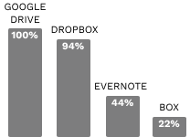
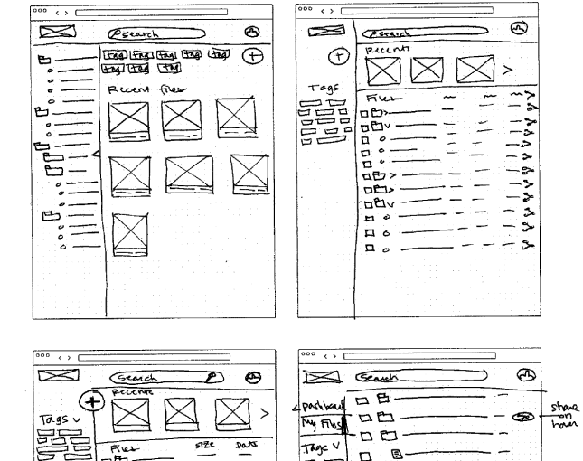
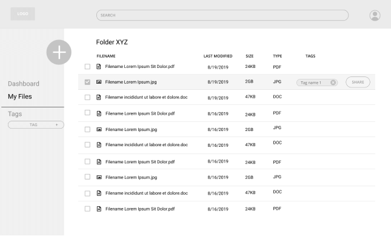
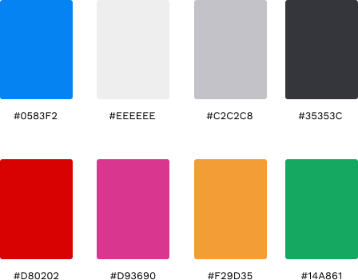
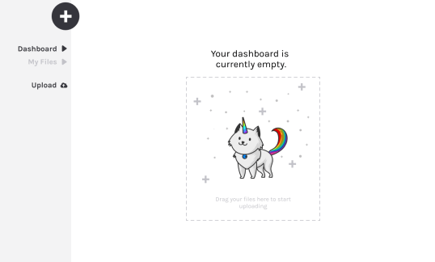
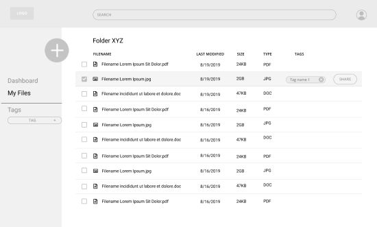
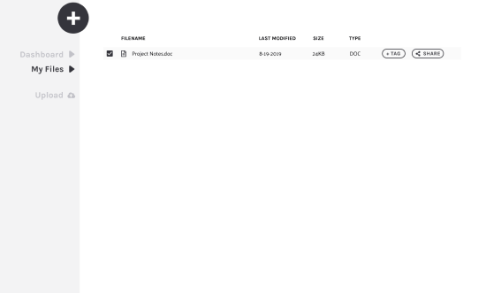
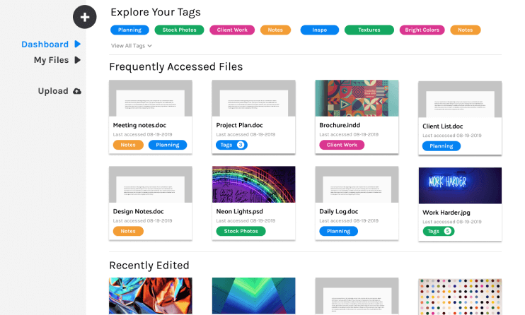

User Research, UX Design, Visual Design, Brand Identity
Deliverables:
User Surveys, Competitive Analysis, User Personas, User Stories & Flows, Wireframes, Usability Testing, High Fidelity Mockups, Clickable Prototype, Style Guide
Invent, design, and brand a novel cloud storage application.
Duration:
5 weeks
The Problem
Unconventional creatives are stuck with conventional tools.
The cloud storage marketplace is dominated by one-size-fits-all solutions that lack features which are critical to digital creatives.
The Solution
Give the user more control.
Chroma was developed to give designers, marketers, and social media managers a better way to organize their files: a customizable tagging system. With user-generated tags, files can be discovered more easily through search, and organization is no longer limited to the traditional file folder system.
The Design Process
The challenge with this project was to imagine how cloud storage could better serve groups with specific needs. Rather than create a solution that worked well enough for everybody, I set out to build a product that worked amazingly for a key demographic of users.
Part One
User Research
I kicked off this project with a user survey, to get a sense of how digital creatives were using cloud storage now, as well as what they did and didn’t like about these services. 20 product designers, marketers, social media managers, and graphic artists participated.
Most respondants used 3 to 4 different cloud storage services.

All respondants used Google Drive, and most used Dropbox. A variety of other services were used less frequently.
67% accessed their cloud storage using a mobile app, while 100% used desktop
Biggest pain points
Confusing organization
Lack of custom organization options
Syncing doesn't work as expected
Most frequently used features:
Storing content
Creating content (documents, notes, etc)
Organizing files
Collaboration
Rarely used features:
Backing up devices
Part Two
Investigating the Competition
With nearly everyone in the survey group using Google Drive and Dropbox, I decided to investigate how these major players were succeeding – and where they fell short. I also took a close look at Notion, a new player on the cloud storage market that combines elements of storage apps like Google Drive and note-taking apps like Evernote.
Google Drive
+
Creation of many doc types
-
Limited search/organization features
Dropbox
-
Clunky desktop UI
-
Limited search/organization features
Notion
+
File tagging feature
-
Doesn't work for most file types
While Google Drive offers basic collaboration features and a robust suite of document creation options, it limits users to a traditional file navigation system when it comes to organizing content. Dropbox suffers from this same limitation of folders and sub-folders, and also comes with a slow and clunky desktop navigation interface. Notion does have a tagging feature, allowing you a unique way to search for files you’ve created on the platform. But Notion doesn’t extend this option to other file types, such as images.
Because a lack of customized organization options was a common weakness shared by all three competitors, I sought to make a tagging system that worked for all file types a key priority for Chroma to better streamline the users’ experience.
Part Three
Who Are My Users?
With all this survey data, it was time to bring the future users to life. Three user personas were crafted to embody the needs of the app’s target audience: a graphic artist, a social media marketer, and a college student studying visual design who’s a little less tech savvy than his peers.
Kiara W.
Graphic Designer, 37
Long Island, NY
“I have such a hard time finding core assets that I use across projects. It’s really difficult to remember where I’ve stored specific files.”
Motivations:
Staying organized across multiple projects and clients
Needs to streamline and simplify her workflow
Katelyn N.
Social Media Manager, 28
San Francisco, CA
“I wish there was a better way to search through my content – I can never remember which date I took a photo, or where I’ve stored it."
Motivations:
Gathering and organizing content for managing multiple social media accounts
Organizing photos she takes for both personal and professional projects
Shane G.
Student, 19
San Houston, TX
“I need a better way to organize all my school projects. I can’t remember what class folder things are in — I feel so disorganized.”
Motivations:
Storing scanned copies of art projects alongside new digital designs
New to cloud storage and digital design tools, wants to increase tech fluency
Keeping the target audience in mind, I knew that including an alternative method of organizing files – something that exists outside of the traditional folder-subfolder hierarchy – would be critical for differentiating our product.
To address this need, I created user stories that allowed users to add and remove tags from individual files, which could be later be discovered through search.
Stories for tag creation, the onboarding process, document and folder creation, search functions, file uploading, and account admin tasks were generated. The highest and medium priority tasks were then converted into user flows to show how the user can accomplish the primary tasks.
Armed with my user flows, I began building out the scaffolding of the app with pen and paper wireframes, and later with Figma. As the app started to take shape, some of the elements described in the user flows were dropped or changed to improve the user experience.
Originally I had envisioned a combination dashboard, where frequently accessed files and a full view of the file navigation hierarchy would be visible. But I quickly realized that this would be too cluttered, making it difficult to do either task well. I decided to break these out into two separate screens in the digital wireframes, allowing users to toggle back and forth between these views in the left navigation panel.
Version 1
Sketches of combination dashboard

Version 2
Lo-fi wireframe of file list view

Lo-fi wireframe of dashboard
Part Six
Bringing the Brand to Life
Before I could embark on prototyping, I needed to establish a brand identity.
Since our target audience would be primarily creatives working with tech, and since our value proposition for this product is expanded organizational features using tags, I wanted to emphasize uniqueness and color.
Exploring colors and patterns with a moodboard
This led to a bright, saturated color palette

Karla and Palanquin were selected as title and body typefaces.
Karla Regular
Karla Bold
Palanquin Regular
Why Chroma?
Chroma was chosen as the brand name, as it brings to mind pure, bright pigments — the stuff of artists and creatives everywhere.
The logo was developed to be reminiscent of a compact disc reflecting a prism in the sunlight. While the CD is a largely obsolete memory storage device, it’s still recent enough to be familiar to our target audience of millenials and gen-X’ers.
Early Sketches
The finished logo mark
Part Seven
From User Testing to Hi-Fi Prototypes
My low fidelity prototypes were linked together into a clickable prototype that illustrated the pathways for 4 user stories: creating an account, creating a new document, uploading a file, and assigning a tag to a file. Three users were tested in person using the desktop version of the app.
In general, the participants found the Chroma app to be clear and intuitive to use, but the test also identified some elements which were confusing to users. Based on this feedback, I had the knowledge to inform some major revisions as I created my first high fidelity prototypes.
In my low fidelity wireframes, the file upload button was nested inside the “+” menu. But two users had difficulty finding this initially. It was moved to the left navigation bar. I also opted to include “drag to center” functionality in the dashboard “empty set” page, to give users another way to upload files quickly.
Users had difficulty finding the upload button in the first lo-fi prototype
How the upload functionality evolved in version 2

Two users also had trouble finding the “add a tag” button here in the left sidebar navigation of my wireframe, but all users intuitively moved to select or hover over the file name when first looking for it. Clearly this was a pattern I needed to include.
In my first high fidelity prototype, I modified the file list view to show the “add a tag” and share button on hover, or when the file is selected in the mobile app.
“Add a tag” button hidden on the left. Important lesson: Just because a button exists doesn’t mean users will actually see it.

In version 2, the “add a tag” button appears when hovering over a file in the navigation panel.

Part Eight
Preference Testing
From here, I tested iterations of several site elements using A/B testing with Usability Hub. The design of the tag element, an upload button, and some tiny tweaks to the typeface in the Chroma logo were all tested with users to identify which version was favored.
In preference testing, users were evenly split between these two tag styles.
However, I realized both of these tag input options still had some problems. The tag was first designed for easy dismissal within the document detail view, with a handy “x” allowing you to remove an unwanted tag. But this design bled over into all other screens of the app, showing a tag dismissal option even in places where it didn’t make sense, such as the search screen.
While the pink version nn the left could have provided an alternative for situations when the dismissal “x” wasn’t needed, it lacked visual continuity with the version on the right, which was still needed in some circumstances.
What became clear is that I needed two layouts of this tag for different situations: one with the “x” and one without.
The two tag styles used in the final design: one with a dismissal option, one without.
Part Nine
User Testing, Round Two
With this new data, I moved ahead and developed the second iteration of my high fidelity prototype and did another round of user testing. Here you can see my new version of the tag in use, a brighter pill shape with a bit more contrast.
The new tag style displays without the dismissal “x” when it isn’t needed, like this “add new tag” menu
The Final Prototype
For my third and final high fidelity prototype, I spent some time researching common UI patterns for tagging, drawer expansion, and accessible text colors. I wound up making some major changes to the design in this round. Here you can see the Reworked dashboard with higher contrast buttons / search bar, more preview tiles, an “explore your tags” section, and new numbered tag design to account for items with more than three tags.
By version 3, the nagivation bar and tag styling had evolved significantly.

A lot of major changes were made to the mobile app as well. In the final version, adding a tag in mobile is done through a slide-up drawer, as is common in modern mobile UI patterns.
Overall, the development of the Chroma app was a really rewarding challenge. I was lucky enough to get some things working well in the first draft, like the homepage layout and onboarding process. I also found that creating a detailed style guide (and updating it as I went through revisions with my visual design) was an enormous help to me as I created each iteration of my high fidelity prototype.
However, some things that I initially thought would be straightforward – like the tagging concept – required far more planning, testing, and iterating than I had bargained for.
This project has been a great reminder of how important it is to always think about those user profiles during all phases of development, and to continually seek criticism and feedback throughout the design process.
With this final version of Chroma, I’ve created a MVP of a new cloud storage service that solves a major organizational problem faced by creatives. No longer would designers, marketers, and illustrators be forced to remember that a particular photo was shot and edited on a specific day back in 2017, or recall the particular file name to effectively search for it -- they could just search for any number of tags assigned to the item.